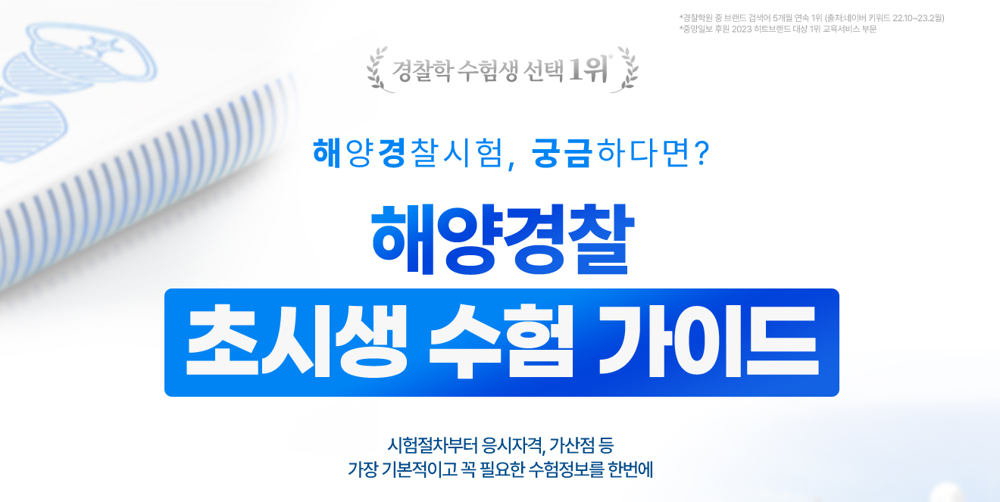

| 구분 | 내용 및 기준 |
|---|---|
| 체격 | 국ㆍ공립병원 또는 종합병원에서 실시한 경찰공무원 채용시험 신체검사 및 약물검사 결과 건강상태가 양호하고, 팔다리는 해양경찰 직무수행에 필요한 장비 및 장구의 사용이 가능한 상태여야 하며, 가슴ㆍ배ㆍ입ㆍ구강ㆍ내장의 질환이 없어야 함 |
| 시력 | 시력(교정시력 포함)은 양쪽 눈이 각각 0.8 이상이어야 함 |
| 색신 | 정상 또는 색약(약도)이어야 함. 다만, 항공·항해분야는 정상이어야 함 ※ 색약 보정기구(렌즈 등) 사용금지(부정행위로 처리, 5년간 응시 제한 可) |
| 청력 | 청력이 정상[좌우 각각 40데시벨(dB)이하의 소리를 들을 수 있는 경우를 말한다]이어야 함 |
| 혈압 | 고혈압·저혈압이 아니어야 함(확장기 90~60㎜Hg, 수축기 145~90㎜Hg 범위에 있어야 함) |
| 문신 | 시술 동기, 의미 및 크기에 비추어 볼 때, 경찰공무원의 명예를 훼손할 수 있다고 판단되는 문신에 해당하지 않아야 함 ※ 문신을 은닉하는 행위금지(부정행위로 처리, 5년간 응시 제한 可) |
| 시험종류 | 설명 | 기준점수 | |
|---|---|---|---|
| 경위 | 순경 | ||
| 토플(TOEFL) | 아메리카합중국 이.티.에스.(ETS: Education Testing Service)에서 시행하는 시험(Test of English as a Foreign Language)으로서 그 실시방식에 따라 피.비.티.(PBT: Paper Based Test) 및 아이.비.티.(IBT: Internet Based Test)로 구분 | PBT 490점 이상 | PBT 470점 이상 |
| IBT 58점 이상 | IBT 52점 이상 | ||
| 토익(TOEIC) | 아메리카합중국 이.티.에스.(ETS: Education Testing Service)에서 시행하는 시험(Test of English for International Communication) | 625점 이상 | 550 이상 |
| 텝스(TEPS) | 서울대학교 영어능력검정시험(Test of English Proficiency developed by Seoul National University) | 280점 이상 | 241점 이상 |
| 지텔프(G-TELP) | 아메리카합중국 국제테스트연구원(International Testing Services Center)에서 주관하는 시험(General Test of English Language Proficiency) | Level 2의 50점 이상 | Level 2의 43점 이상 |
| 플렉스(FLEX) | 한국외국어대학교 어학능력검정시험(Foreign Language Examination) | 520점 이상 | 457점 이상 |
| 토셀(TOSEL) | 국제토셀위원회에서 주관하는 시험(Test of the Skills in the English Language) | Advanced 550점 이상 | Advanced 510점 이상 |
| 종목 | 측정방법 등 |
|---|---|
| 100m 달리기 |
|
| 악 력 |
|
| 윗몸일으키기 |
|
| 팔굽혀펴기 |
|
| 팔굽혀펴기 |
|
| 비고 : 체력검사 종목의 구체적인 평가방법은 해양경찰청장이 정한다. | |